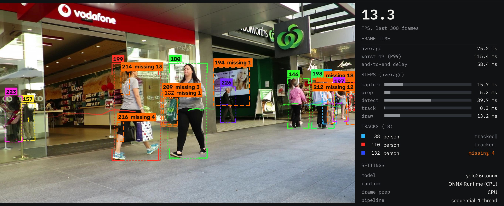

Multi-object tracking · C++ / CUDA / TensorRT · real time
Follow every object. Keep its ID when it vanishes for a moment.
Tether follows moving objects in video, people or drones, and keeps a steady ID on each one, even when it's briefly hidden or the detector misses it. A YOLO26n detector finds objects each frame; a hand-written tracker links them over time. It was built in Python first, then ported to C++ with identical output and moved onto an NVIDIA GPU. Every goal was set before it was measured, and the misses are reported beside the wins.
github.com/Khriis-K/Tether
A toy written for this page, not Tether's code or output: a constant-velocity Kalman filter, greedy matching in two stages, and the same lifecycle (3 hits to confirm, up to 30 frames of searching). Turn searching off and every gap behind the pillar costs a new ID. Switches with searching on are mostly two objects crossing while a detection is missing, a failure real trackers share. Tether's real version uses staged Hungarian matching, a capped search gate and more.
Recorded in the running app
The HUD, on real footage
Both clips were recorded with tether-pipeline --record on TensorRT. Each object gets a colour and an ID, a fading trail, and a thin dashed box where the tracker expects it next. A thick orange dashed box is something the detector lost that the tracker is still searching for.
test/20190925_111757_1_1, the standard clip the speed benchmarks use, picked for that and not for how the model does on it. Across the whole test set the model met 2 of its 6 targets (below). Video: Anti-UAV, MIT License, © 2020 Zhao Jian.
How it works
Five stages, each on its own thread
The detector says what's in this frame. The tracker decides which of those things it saw last frame. In the shipped configuration each stage runs on its own thread, joined by one-frame queues, and the frame never leaves the GPU between prep and detect.
Decode the next frame from a video, a webcam or a folder of images.
OpenCV · one video-source interfaceLetterbox, reorder and scale in one CUDA kernel, bit-identical to CPU prep on 1920×1080 frames.
custom CUDA kernelYOLO26n at 1280×736, replayed from a CUDA graph: one launch per frame instead of one per kernel.
TensorRT · CUDA graphPredict each track with a Kalman filter, pair detections to predictions in stages, update the lifecycle.
Kalman · staged HungarianThe HUD on the video and the stats panel beside it, on the main thread.
OpenCV · Dear ImGuiParallel trades delay for throughput: frames wait in the queues, so on the 640 CPU setup end-to-end delay went from about 37 ms to 147–159 ms on video files while throughput rose 1.23–1.57×. Tracks are unchanged: recordings came out byte-identical between modes.
A new detection with no history. It has to be seen 3 frames running before it gets drawn, so one-frame noise never earns an ID.
Matched this frame. Solid corner brackets in the track's colour; colours step around the hue wheel by the golden ratio so neighbouring IDs look different.
The detector missed it. The Kalman filter keeps predicting, and a search gate around the prediction waits for it to come back with the same ID.
Missing for 30 frames. Anything that comes back after that has to take a new ID, which is why even a perfect tracker has a ceiling below 100%.
Measured
What the benchmarks say
Every number on this page comes from a committed write-up in docs/benchmarks/, with its setup, raw tables and caveats. Timings are from one laptop (Ryzen AI 7 350, RTX 5070 Laptop GPU), Windows, headless, two rounds each unless noted; ranges are the spread across rounds.
Matches a widely used tracker on the standard pedestrian benchmark
Both trackers read the same YOLO26n detections and apply their own thresholds. 7 MOT17 train videos, scored with TrackEval.
| Tracker · input | HOTA ↑ | IDF1 ↑ | ID switches ↓ |
|---|---|---|---|
| Tether · 1280×736 | 41.46 | 49.38 | 732 |
| ByteTrack · 1280×736 | 40.86 | 48.63 | 800 |
| Tether · 640 | 33.13 | 37.62 | 529 |
| ByteTrack · 640 | 33.46 | 37.91 | 549 |
Read it as "matches", not "beats". These 7 videos are also the ones the settings were tuned on, with no held-out split, and the 0.60 HOTA margin is small. At 640 Tether is slightly behind on HOTA and IDF1. ByteTrack is Ultralytics' BYTETracker at its defaults. Write-up
Keeping a drone's ID when detections disappear
Detections are the labeled boxes with failures added on purpose, so this tests the tracker, not the detector. An ID counts as kept only if its box overlaps the drone at IoU ≥ 0.5. 91 test clips, run once at the end; settings were tuned on val.
Grey: the first tracker. White: the final one.
The ID-kept goal was missed by 5.3 points. It's set relative to a ceiling, 94.0%, because a track forgotten after 30 frames must take a new ID. An oracle that knows there's only one drone reaches 93.3% on val, but a general rule that gets there wasn't found. Write-up
From 127 to 195 FPS by moving one step onto the GPU
YOLO26n at 1280×736 on TensorRT, parallel, on the Anti-UAV video clip. Profiling showed CPU frame prep was the slowest stage; one CUDA kernel fixed it.
Bars drawn to the top of each range; the FPS scale ends at 200.
Video files only. MOT17-04, a folder of JPEGs, runs 65.46–65.67 FPS because decoding the images is the limit. Webcam delay in this configuration wasn't measured. Write-up
14× faster tracking, but only 1.08–1.20× end to end
The C++ port reproduces the prototype exactly: same IDs and statuses on every frame of 462 real detection files. That meant copying even how SciPy breaks ties in the assignment solver.
| Tracking step | Python ms | C++ ms | Speedup |
|---|---|---|---|
| MOT17 train | 2.521 | 0.1785 | 14.1× |
| Anti-UAV test | 0.172 | 0.0049 | 35.0× |
Amdahl's law. The whole-pipeline goal of 2× was missed: both pipelines ran the same CPU detector, 66–83% of a C++ frame, so even free tracking would cap the gain at 1.27–1.76×. Write-up
Input size mattered more than model size
At 640 the 1920×1080 MOT17 frames shrink 3× and the detector found 33.7% of people; at 1280×736 it found 54.6% at similar precision. The smallest model at the larger input beat the medium one at 640, and was the most accurate row that met both speed goals.
| Model · input | FPS | P99 ms | Slowest stage | HOTA | IDF1 |
|---|---|---|---|---|---|
| n · 640 | 141.80–186.27 | 6.77–9.47 | capture | 32.74 | 37.05 |
| m · 640 | 105.43–106.05 | 11.17–11.31 | detect | 38.72 | 44.70 |
| n · 1280×736 (shipped) | 124.82–126.18 | 9.17–10.45 | prep | 41.55 | 49.33 |
| s · 1280×736 | 108.89–110.06 | 10.99–11.08 | detect | 44.86 | 52.30 |
| m · 1280×736 | 46.77–47.20 | 24.46–24.62 | detect | 46.90 | 54.77 |
Before CUDA prep, so the shipped row is prep-bound here; with the kernel it reaches 195.45–195.86 FPS. FP16 engines, which might bring s and m under the goal, weren't tried. MOT17 is the tuning set. Write-up
Reproduced in Docker: one command ran every benchmark in 45.7 minutes on the same laptop through WSL 2, and every accuracy number matched the write-ups exactly. Timings differ, as expected on another OS and TensorRT version. Write-up
Targets set up front
The scorecard, misses included
The spec set these goals before the work was measured, and the drone model's before its one test run. Nothing here was re-tuned after seeing the result.
Full table with sources: README scorecard and SPEC targets.
Stage 5 · fine-tuned detector
A drone detector, tested once
The standard detector was never trained on drones and found 22.2% of them. A one-class YOLO26n was fine-tuned on footage from one test site (Anti-UAV), on a validation split that keeps whole recording sessions apart so near-identical frames can't leak. Its pass marks were written down before anyone looked at the test footage, then the test was run once.
- It finds drones at that site. On new flights from the same camera it spots the drone in 88.4% of frames, and 97.5% of what it flags is a drone. AP50 0.915 against the starting model's 0.402.
- It's fast enough for real time. 195.59–198.63 FPS in the shipped configuration, on one clip.
- Keeping the drone's ID. 75.3% of test frames end to end, short of 95% of what the same tracker gets from hand labels (82.6%).
- Ignoring things that aren't drones. It flagged 19 of 86 bird photos, and made 190 detections in 2.25 minutes of empty sky, 174 on one lamp at night.
- Working anywhere else. On drone photos from other sources (Seraphim) it scored below the untrained model: AP50 0.164 against 0.216.
So it's the detection and tracking part of a drone-defence system, measured on one site's footage, not a drone-defence system. Test write-up · ADR 0004
From docs/LESSONS.md
What the bugs taught
The project keeps a story for every problem worth remembering. These are the habits they added up to.
Check the ceiling upstream
The first MOT17 score was low, and the tracker wasn't to blame: the detector found a third of the people. A tracker can't beat its detector, so measure what the input allows before tuning. That led to the 1280×736 input. Story
Run the null case on your metric
The first "ID kept" score could be faked by doing nothing. Asking what a useless tracker would score exposed it, and the IoU ≥ 0.5 rule went in. Story
Ablate, don't guess
Tether made about 470 more ID switches than ByteTrack. Changing one thing at a time found the matching order was the cause: 1270 → 779 switches, 35.6 → 40.9 HOTA. Story
Test where the fix can fail
A change that helped drones hurt crowds. A second benchmark, checked per video and not just in total, is what showed it. Story
Profile before you optimise
At 640, Nsight showed frame prep wasn't the bottleneck; kernel launches were, so a CUDA graph came first. At 1280×736 prep became the slowest stage, and only then was the CUDA kernel worth writing. Story
Set the targets before the test
Val already said 99% for the drone model, so the test targets were set with reasons other than the val score, then the test was run once. Four of six failed, and that's on the page. Story
Built with
Tech stack
C++20, CMake, CUDA, TensorRT 11, ONNX Runtime, OpenCV, Dear ImGui, NVTX + Nsight Systems
NumPy, SciPy, ONNX Runtime, OpenCV, Ultralytics (export, fine-tuning, ByteTrack baseline)
TrackEval (HOTA, IDF1, ID switches), MOT17, Anti-UAV, Seraphim, Drone-vs-Bird; AP50, recall and precision scorers
pytest, GoogleTest + ctest, a Python-vs-C++ parity check on every build, Docker on NVIDIA's TensorRT image
Stated up front
Limitations
- MOT17 is tuning data. There's no held-out split, so the ByteTrack comparison is "matches", not "beats".
- Sparse scenes can swap IDs. With nobody else around, a person who walks out can hand their ID to a similar-size newcomer within about a second. A real fix needs appearance re-ID.
- The fast path is opt-in. Defaults stay ONNX Runtime on the CPU, CPU prep and sequential, so Tether runs without a GPU, but there the 1280×736 model is slow (11.9 FPS sequential on the Anti-UAV clip).
- One machine. All timings come from one laptop and one GPU, and the CUDA kernel is compiled for that GPU's architecture by default.
- The drone model knows one site. One camera, two days of footage; it does worse than its starting model elsewhere.
- A portfolio project, not a product. Not for safety-critical use.